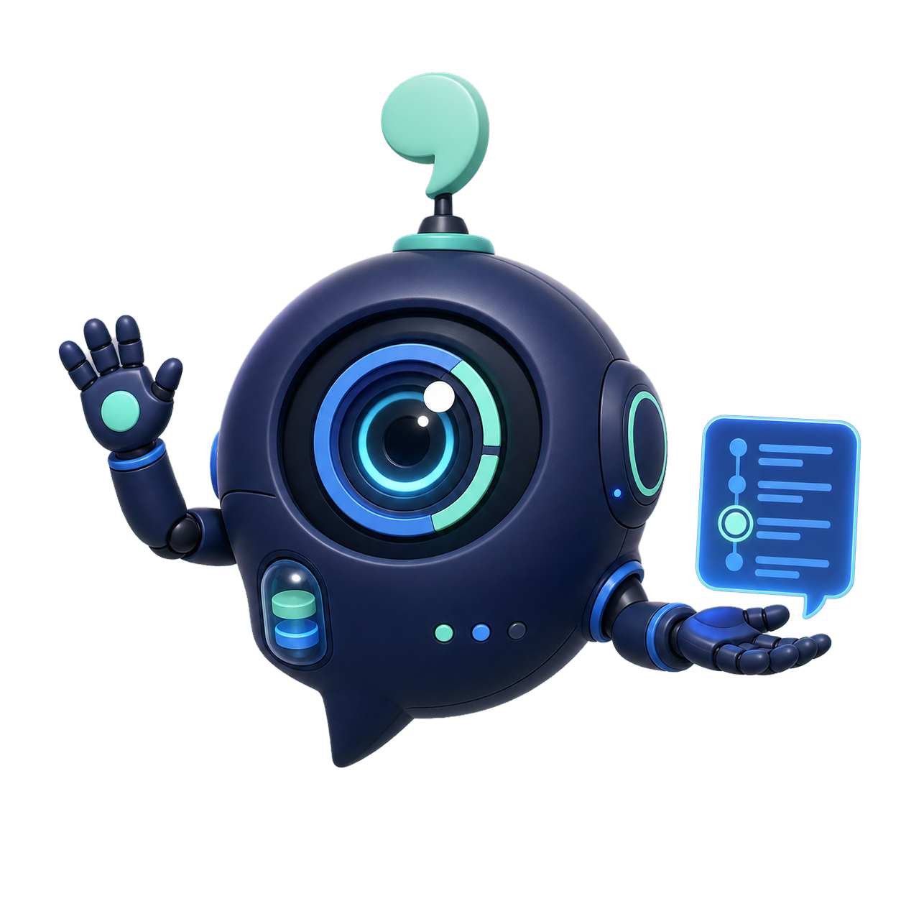

Planejar a nova arquitetura de atualização
Projeto: TrackerTalk · contexto preservado
Para quem usa Claude Code, Codex, Antigravity e outros assistentes pelo terminal. Ao encerrar uma conversa, esses CLIs mostram um identificador que permite retomá-la depois. É justamente ele que se perde quando a janela fecha sozinha.
O TrackerTalk fica na área de notificação, pergunta se você quer preservar cada conversa e mantém uma cópia local enquanto você trabalha. Depois, um painel reúne todas elas, de todos os CLIs, com o comando exato para continuar de onde parou.
O Windows pede uma confirmação a mais. Por quê
Projeto: TrackerTalk · contexto preservado
Pronta para retomar pelo ID nativo

Ao encerrar uma conversa, a maioria dos CLIs mostra o identificador que permite retomá-la depois. É com ele que se volta ao assunto, com codex resume, claude --resume e equivalentes. O problema é o que acontece quando esse encerramento não é você quem escolhe.
Uma aba fechada sem querer, o editor que reiniciou para atualizar, a máquina que travou, a energia que caiu. Nenhum desses momentos avisa antes.
No dia seguinte, encontrar a conversa certa entre as de ontem depende de ter anotado um identificador que você não sabia que precisaria.
O que se perde não é a conversa: é o contexto. Explicar o mesmo problema de novo, reunir os mesmos arquivos e repetir decisões já tomadas consome tempo e tokens.
O TrackerTalk acompanha o que os próprios provedores já registram e organiza tudo em uma experiência única.
Mostra terminais de IA confirmados como abertos e ainda sem rastreamento, sem confundir arquivos antigos com sessões vivas.
Preserva mensagens e imagens em uma cópia independente enquanto a conversa continua no terminal original.
Guarda o ID nativo e prepara o comando certo para reabrir a conversa no provedor correspondente.
Entrega o histórico para outro assistente assimilar primeiro, sem tratar pendências antigas como autorização atual.
Encontre uma conversa por título, projeto, provedor, ID ou palavras presentes nas mensagens preservadas.
Excluir um rastreio remove somente a cópia auxiliar. O terminal e os arquivos nativos do provedor permanecem intactos.
Depois de instalar, você continua abrindo o Codex, o Claude Code ou o Antigravity exatamente como abre hoje. O TrackerTalk trabalha ao lado, não no meio.
Os próprios CLIs já gravam a conversa em disco enquanto ela acontece. O agente nota quando isso começa e pergunta, fora do terminal, se você quer preservar aquela conversa. Você responde quando quiser: nada é rastreado sem a sua resposta.
Dizendo que sim, ele passa a copiar a transcrição a cada alteração, junto com as imagens que você anexou, e dá àquela conversa um identificador próprio. Você não precisa anotar nada, e o arquivo original do provedor nunca é alterado.
O painel local mostra todas as conversas, de todos os CLIs, com projeto, provedor, data, situação e assunto. Dá para buscar por palavra, inclusive dentro das mensagens, ler a conversa completa com código e imagens, copiar o comando de retomada ou abrir um terminal já com ele.
Explore as funções em capturas do próprio TrackerTalk. Veja cada detalhe no carrossel e acompanhe o fluxo completo no vídeo.
Escolha uma função para explorar no seu ritmo. Clique na imagem para ampliar.
Um passeio sem áudio pelo fluxo principal, com capturas reais do painel e explicações na tela.
Às vezes você começa no Codex, esbarra em alguma coisa e queria a opinião do Claude. Normalmente isso significa explicar tudo de novo.
No TrackerTalk é um botão. Ele monta um pacote com o histórico que já está preservado, abre o CLI que você escolher e entrega esse contexto ao novo assistente com uma instrução clara: primeiro entenda o que já foi feito, apresente o entendimento e espere uma nova orientação, sem sair executando pendências antigas por conta própria.
A conversa original continua intacta, a nova também passa a ser preservada, e o painel mostra a ramificação entre as duas. Dá para ver quem nasceu de quem.
Esta parte importa tanto quanto a de cima. O TrackerTalk observa arquivos que os provedores já gravam. Só isso.
Sem conta, sem login, sem nuvem e sem API do TrackerTalk. As conversas ficam na sua máquina, e o painel escuta apenas em 127.0.0.1.
Ele copia. A transcrição original de cada CLI permanece exatamente como está, e os comandos oficiais continuam funcionando do mesmo jeito.
Não captura a tela, não lê o que você digita, não escreve no terminal e nunca encerra um CLI em execução, nem para se atualizar.
O TrackerTalk não precisa de conta própria, não envia o conteúdo das conversas para um servidor do produto e não substitui os CLIs oficiais. A verificação futura de atualização consultará somente um pequeno manifesto público de versão.
agyCada instalador tem número próprio, notas e SHA-256. Versões anteriores permanecem disponíveis para consulta e download.
15,2 MB · licença proprietária gratuita
AC49752504371313B99BBABA7CBA086A4A5AAA4FC2C83694F106C3C3BC46174E
Carregando versões…
Ele aparece, e é melhor você saber disso antes de baixar do que ser surpreendido no meio do caminho.
O navegador pode segurar o arquivo e pedir que você confirme se quer mesmo mantê-lo. Em geral é um botão Manter ou Keep, às vezes escondido atrás dos três pontinhos ao lado do download.
Uma tela azul diz que o Windows protegeu o seu computador. O botão para prosseguir não fica à vista: clique em Mais informações e depois em Executar assim mesmo.
Nenhum dos dois avisos diz que existe algo de errado com o arquivo. Eles dizem que o programa não tem assinatura digital, que é um certificado pago usado para provar quem publicou o instalador. Sem ele, o Windows trata qualquer programa novo como desconhecido, independentemente do que ele faça.
O TrackerTalk ainda não tem esse certificado. Enquanto não tiver, os avisos vão continuar aparecendo, e seria desonesto afirmar o contrário. O que dá para fazer é deixar você em condições de conferir por conta própria, sem precisar acreditar em nós.
O instalador é publicado nas Releases oficiais do projeto no GitHub, e a página acima mostra o SHA-256 de cada versão. Esse número muda por completo se um único byte do arquivo for diferente. Para comparar, abra o PowerShell na pasta do download e execute:
Get-FileHash .\TrackerTalk-Setup-0.11.2.exe -Algorithm SHA256Se o resultado for igual ao SHA-256 publicado, o arquivo que está no seu computador é exatamente o que foi compilado e publicado aqui. Se for diferente, não execute.
Não. O rastreio e a visualização usam cópias locais. O site hospeda somente os instaladores e metadados públicos de versão.
Não. A exclusão remove somente a cópia do TrackerTalk e nunca encerra o PowerShell, CMD ou o processo do provedor de IA.
A partir da 0.7.0, o TrackerTalk verifica o manifesto público no máximo uma vez a cada 24 horas. Quando houver uma versão nova, baixar e executar o instalador exigem confirmações separadas do usuário.
Sim. Todas as versões publicadas ficam na página de Releases. Um instalador antigo pode não compreender formatos de dados criados por versões futuras; consulte sempre as notas de compatibilidade.
Porque o instalador ainda não tem assinatura digital, e não porque exista algo de errado com ele. O aviso aparece ao baixar e ao executar. A seção sobre o aviso mostra o que aparece em cada momento, o que clicar e como comparar o SHA-256 antes de executar.
Use o menu da bandeja, o atalho “Desinstalar TrackerTalk” ou as Configurações do Windows. O desinstalador pergunta separadamente se você também deseja apagar as cópias locais.